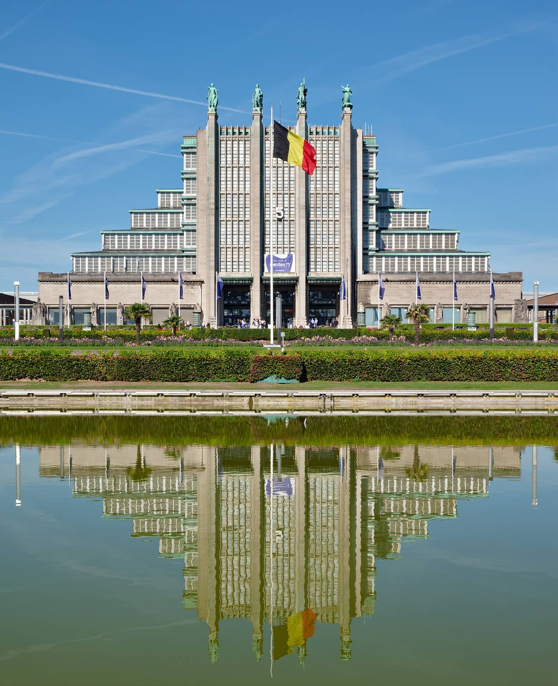
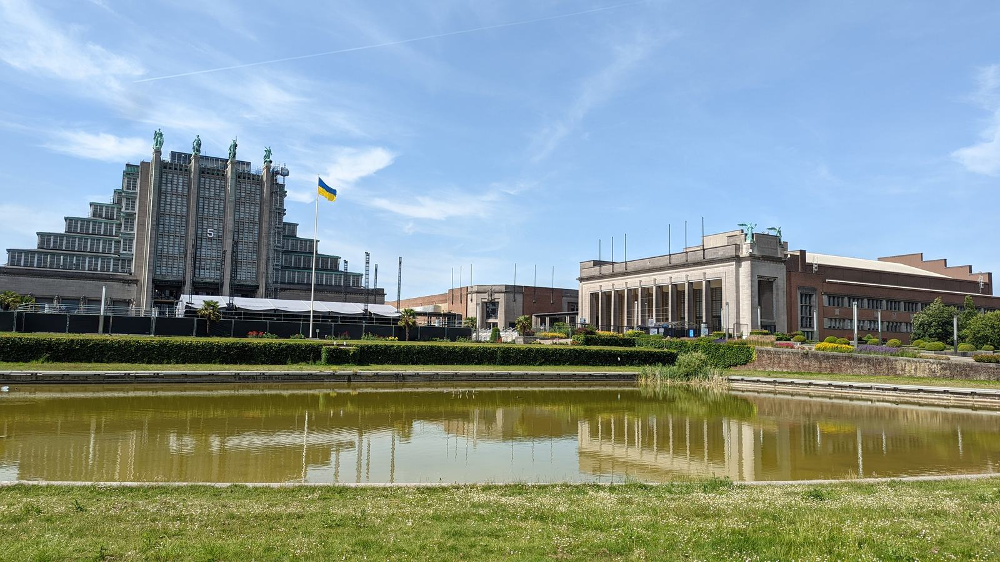

Venue · Exhibition grounds
Brussels Expo
- Type
- Exhibition grounds
- Location
- Brussels, Belgium
- Address
- Place de Belgique 1, 1020 Brussels
- Halls
- Official technical pages list Halls 1–11, Hall 12 / ING Arena, plus supporting rooms including Auditorium 2000, Astrid Hall and Patio Hall
- Official website
- https://www.brussels-expo.com/en/
About
Belgium’s main exhibition park at the Heysel, officially at Place de Belgique 1, 1020 Brussels. Official technical information lists Halls 01–11 and Hall 12 (ING Arena) with downloadable documents per hall. A single official indoor exhibition campus total was not published on the retrieved official pages, so exhibition_sqm and capacity_max_delegates are left null rather than taken from secondary UFI or third-party figures. Coordinates are the atlas precise pin, matching the Nominatim events-centre pin.
Upcoming events
- Cybersec Europe 2027Brussels, BelgiumTech
- Made in Asia 2027Brussels, BelgiumCulture
- BRAFA Art Fair 2027Brussels, BelgiumArts
- Art Brussels 2027Brussels, BelgiumArts
- Busworld Europe 2027Brussels, BelgiumExpos
Sources
- Official source — https://www.brussels-expo.com/en/
- Official source — https://www.brussels-expo.com/en/technical-information/
- Official source — https://www.brussels-expo.com/en/contact/